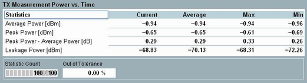
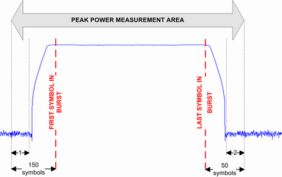

Statistical Power vs. Time Results (LE)
The "TX Measurement Power vs. Time" view displays statistical power results. This measurement supports test packet and advertiser packet tests.

Bluetooth multi-evaluation: power results (LE)
The power results table contains the following measurements:
- "Average Power" in dBm: Average burst power during the carrier-on state. The average power is measured in the time interval starting at the detected 1st bit of the preamble (bit p0) to the last bit of the burst.
- "Peak Power" in dBm: Maximum power within the whole burst, i.e. between the first sample of the leakage pre-area and the last sample of the leakage post-area.
- "Peak Power – Average Power" in dB: Difference between the peak power and the average power in the burst.
- "Leakage Power": Average power during the carrier-off state. The leakage power is measured in the leakage pre-area and the leakage post-area.

Definition of power results (LE)
1 = leakage pre-area (10 symbols)
2 = leakage post-area (10 symbols)
Additional results in automatic detection mode If automatic burst detection is active ("Input Signal > Detection Mode: Auto"), the "Power Scalars" view also shows the detected pattern type and payload length of the LE test packets. Automatic detection mode is indicated in the upper right corner. |
For query of the results via remote control, see "Power Measurement Results (LE)"